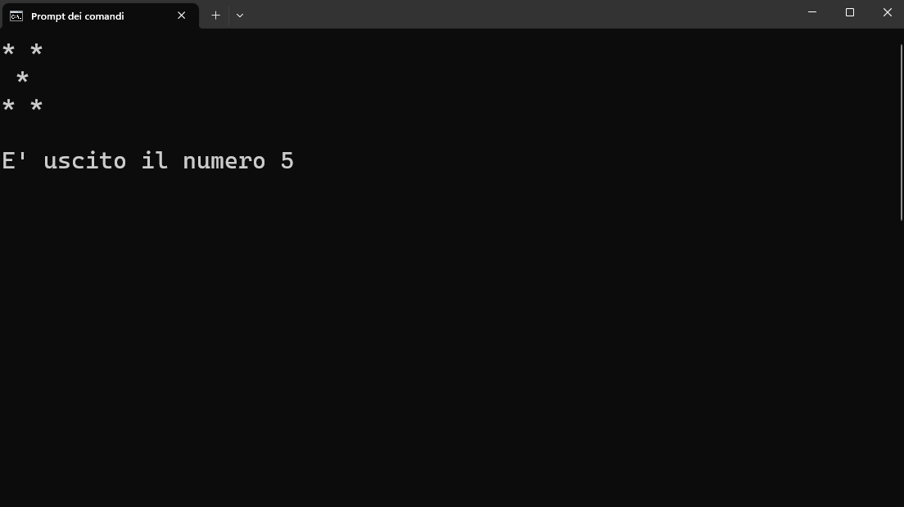
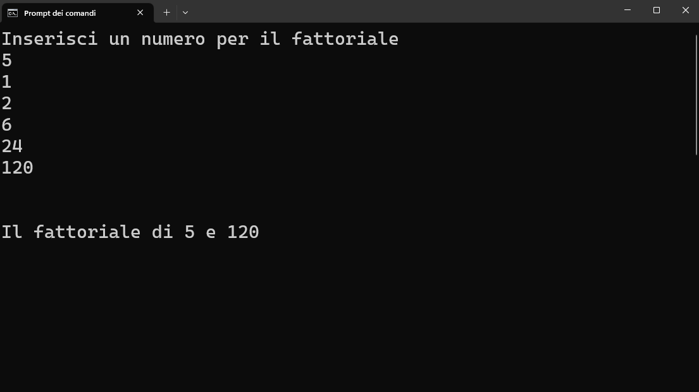
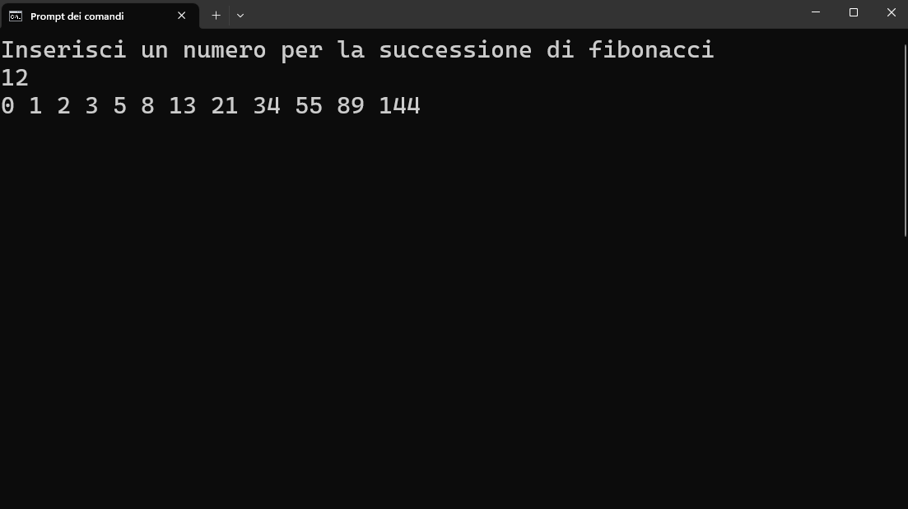
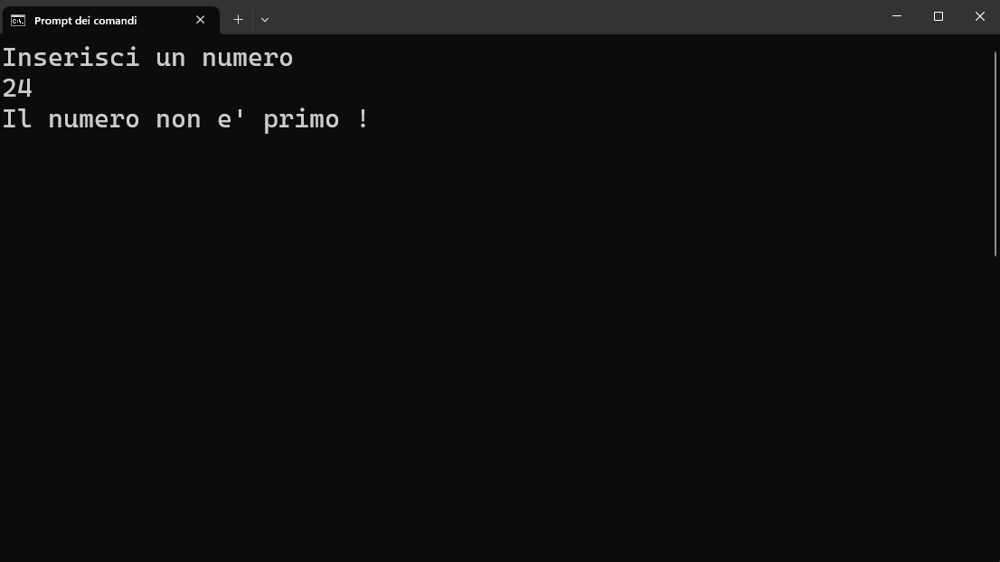
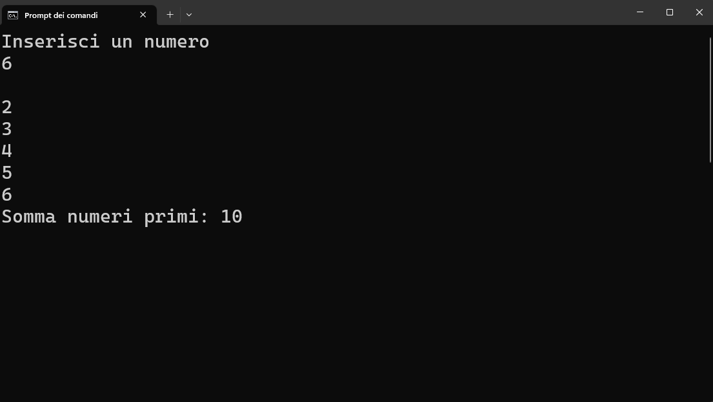
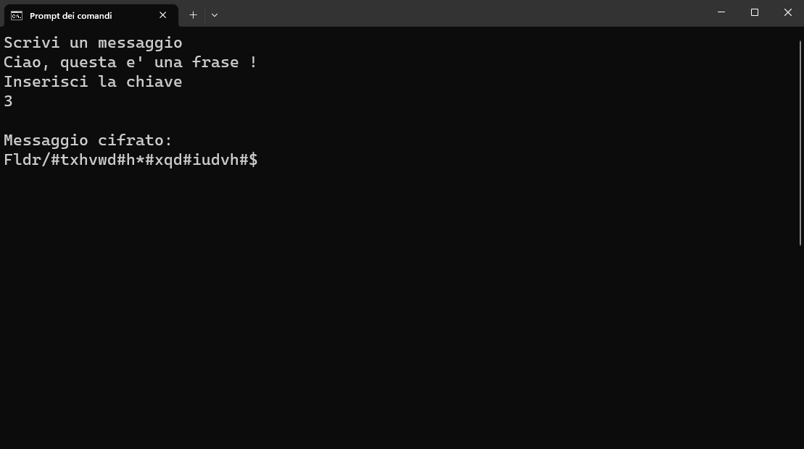
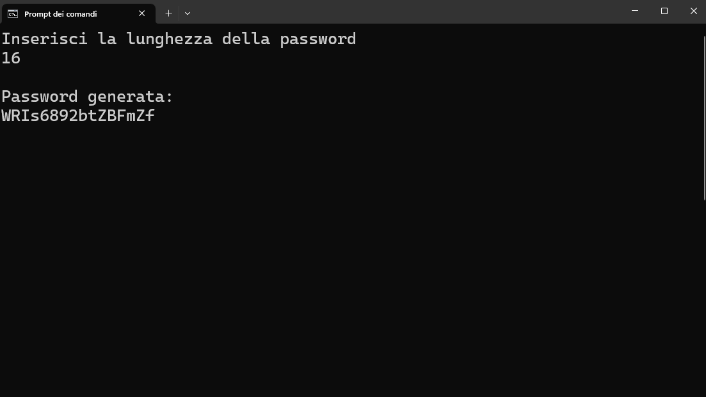
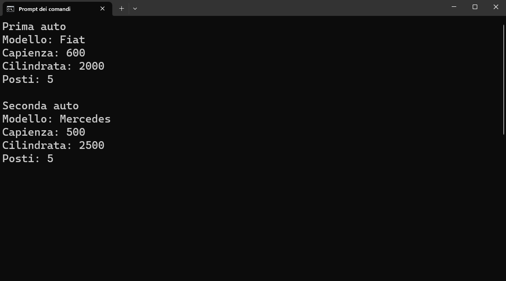
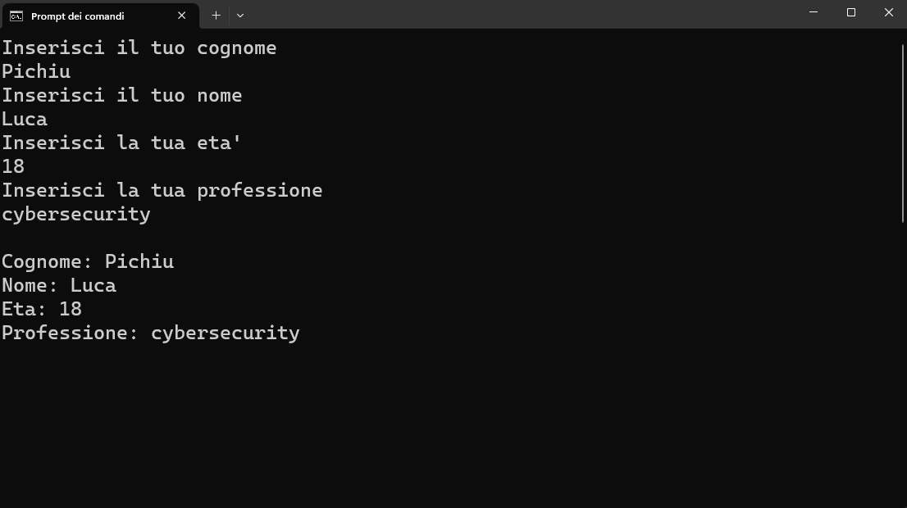
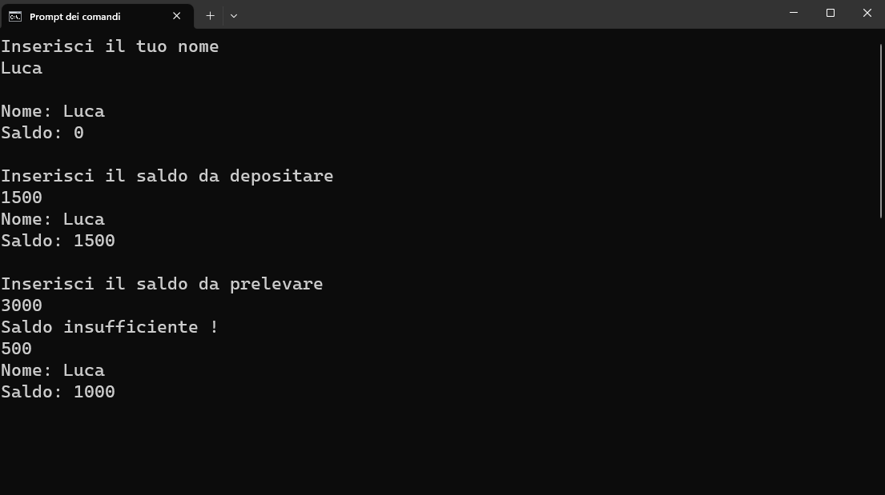

ESERCIZI C++
Introduzione
Esercizio 1: Hello World

Scrivi un programma che visualizza "Hello World!" sullo schermo.
Soluzione C++Esercizio 2: Interazione e Output

Scrivi un programma che richiede un numero intero e lo mostra sullo schermo.
Soluzione C++Esercizio 3: Somma di 2 numeri

Scrivi un programma che richiede due numeri interi e ne calcola la somma.
Soluzione C++Esercizio 4: Interazione e Output basato sul nome

Scrivi un programma che richiede un nome come input e mostra un saluto personalizzato con quel nome.
Soluzione C++Esercizio 5: Intero, numero con la virgola e carattere

Scrivi un programma che richiede un intero (int), un numero con la virgola (double o float) e un carattere (char), e visualizza tutti i tipi di dati menzionati.
Soluzione C++Condizioni
Esercizio 6 : Numero positivo, negativo o nullo

Scrivi un programma che richiede un numero intero e determina se è positivo, negativo o nullo (uguale a 0).
Soluzione C++Esercizio 7: Numero maggiore tra due numeri interi

Scrivi un programma che richiede due numeri interi e determina quale numero è il maggiore.
Soluzione C++Esercizio 8 : Pari o dispari

Scrivi un programma che richiede un numero intero e determina se è pari o dispari.
Soluzione C++Esercizio 9: Numero minore tra due numeri interi

Scrivi un programma che richiede due numeri interi e determina quale numero è il minore.
Soluzione C++Esercizio 10: Numero massimo tra tre numeri interi

Scrivi un programma che richiede tre numeri interi e determina quale numero è il massimo tra di loro.
Soluzione C++Esercizio 11: Numero minimo tra tre numeri interi

Scrivi un programma che richiede tre numeri interi e determina quale numero è il minimo tra di loro.
Soluzione C++Esercizio 12: Maggiorenne o minorenne

Scrivi un programma che richiede un numero intero e determina se la persona corrispondente a quell'età è maggiorenne o minorenne.
Soluzione C++Esercizio 13: Numeri multipli

Scrivi un programma che richiede due numeri interi e determina se sono multipli l'uno dell'altro.
Soluzione C++Esercizio 14: Anno bisestile

Scrivi un programma che richiede un numero che rappresenta un anno e determina se è un anno bisestile o meno. Un anno è considerato bisestile se è divisibile per 4 ma non per 100, a meno che non sia divisibile per 400. Ad esempio, il 1900 non è stato un anno bisestile, mentre il 2000 lo è stato.
Soluzione C++Esercizio 15: Uomo sulla Luna

Supponiamo che l'anno in cui l'uomo è andato sulla Luna sia il 1969. Scrivi un programma che richiede un numero che rappresenta un anno di nascita e determina se la persona è nata nello stesso anno in cui è avvenuto l'allunaggio, oppure calcola quanti anni sono trascorsi prima o dopo tale evento.
Soluzione C++Esercizio 16: Numeri compresi

Scrivi un programma che richiede tre numeri interi chiamati A, B e C e determina se il valore di B è compreso tra A e C.
Soluzione C++Esercizio 17: Vocali e consonanti

Scrivi un programma che richiede un carattere e determina se è una vocale o meno.
Soluzione C++Esercizio 18: Verificare una data

Scrivi un programma che verifica la correttezza di una data inserita, considerando che ci sono 12 mesi e che non tutti i mesi hanno 31 giorni. Inoltre, il programma deve gestire correttamente gli anni bisestili.
Soluzione C++Esercizio 19: Numeri in ordine crescente

Scrivi un programma che legge tre numeri interi e li ordina in modo crescente.
Soluzione C++Esercizio 20: Numero maggiore

Scrivi un programma che richiede tre numeri e determina il maggiore tra di essi, mostrando il messaggio "Il maggiore è il primo" se il primo numero è il più grande, "Il maggiore è il secondo" se il secondo numero è il più grande, e "Il maggiore è il terzo" se il terzo numero è il più grande.
Soluzione C++Esercizio 21: Confronto tra 2 orari

Scrivi un programma che richiede due orari in ore, minuti e secondi, e determina quale dei due viene prima.
Soluzione C++Esercizio 22: Celsius, Fanrenheit e Kelvin

Scrivi un programma che richiede una temperatura in gradi Celsius e la converte in gradi Fahrenheit e Kelvin. Se la temperatura inserita è inferiore allo zero assoluto (-273,15 °C), il programma segnalerà un errore.
Soluzione C++Esercizio 23: Numeri crescenti

Scrivi un programma che richiede tre numeri interi e determina se sono in progressione aritmetica, cioè se la differenza tra due numeri successivi è costante.
Soluzione C++Esercizio 24: Voto verifica

Scrivi un programma che richiede un voto intero e determina se è sufficiente o insufficiente. Nel caso di un voto insufficiente, il programma distinguerà tra insufficiente semplice e insufficiente grave.
Soluzione C++Esercizio 25: Limiti di velocità

Scrivi un programma che richiede la velocità massima consentita e la velocità rilevata, e stampa un messaggio appropriato. Se la velocità rilevata è entro i limiti consentiti, il programma stamperà "Limite rispettato". Se la velocità rilevata supera i limiti consentiti, il programma calcolerà l'ammontare della multa da pagare in base alla seguente scala:
- Se la velocità supera di non più di 10 km/h il limite massimo, la multa da pagare sarà di €36.
- Se la velocità supera di oltre 10 km/h ma non più di 40 km/h il limite massimo, la multa da pagare sarà di €148.
- Se la velocità supera di oltre 40 km/h ma non più di 60 km/h il limite massimo, la multa da pagare sarà di €370.
- Se la velocità supera di oltre 60 km/h il limite massimo, la multa da pagare sarà di €500.
Il programma stampa il messaggio appropriato con l'ammontare della multa da pagare.
Soluzione C++Cicli
Esercizio 26: Iterazioni di numeri

Scrivi un programma che stampa i primi 100 numeri naturali a video.
Soluzione C++Esercizio 27: Calcola somma

Scrivi un programma che richiede l'inserimento di 10 numeri utilizzando un ciclo, calcola la loro somma e mostra il risultato.
Soluzione C++Esercizio 28: Calcola media

Scrivi un programma che richiede un numero intero che indica il numero di iterazioni del ciclo.
Durante ogni iterazione, il programma chiederà l'inserimento di un numero,
calcolerà la somma di tutti i numeri inseriti e infine calcolerà la media di tali numeri.
Esercizio 29: Prodotto tra 2 numeri

Scrivi un programma che richiede due numeri interi e calcola il loro prodotto utilizzando solo l'operazione di somma, utilizzando un ciclo.
Soluzione C++Esercizio 30: Contatore

Scrivi un programma che richiede un numero intero che indica il numero di iterazioni del ciclo. Durante ogni iterazione, il programma chiederà l'inserimento di un numero e alla fine calcolerà quante volte è stato inserito il numero 9.
Soluzione C++Esercizio 31: Numeri divisibili

Scrivi un programma che richiede un numero intero che rappresenta il numero di iterazioni.
Durante ogni iterazione, il programma chiederà l'inserimento di un numero e conterà quanti di questi numeri sono divisibili per 3.
Esercizio 32: Numero minimo tra tanti numeri

Scrivi un programma che richiede il numero N di misurazioni e calcola il valore minimo tra di esse, poi lo visualizza.
Soluzione C++Esercizio 33: Primi 100 termini di una successione armonica

Scrivi un programma che calcola la somma dei primi 100 termini della seguente successione: 1/1, 1/2, 1/3, 1/4, ..., 1/100 e visualizza il risultato a video.
Soluzione C++Esercizio 34: Somma con iterazione indefinita

Scrivi un programma che richiede una serie di numeri interi e calcola la somma totale.
La serie termina quando viene inserito il valore 0, e a quel punto viene visualizzata la somma totale.
Esercizio 35: Pattern

Scrivi un programma che richiede un numero intero compreso tra 1 e 20 e stampa gli asterischi corrispondenti a quel numero.
Soluzione C++Esercizio 36: Numero massimo tra tant numeri

Scrivi un programma che richiede il numero N di misurazioni e calcola il valore massimo tra di esse, poi lo visualizza.
Soluzione C++Esercizio 37: Iterazione definita

Scrivi un programma che richiede un numero intero positivo che indica il numero di iterazioni del ciclo.
Durante ogni iterazione, il programma calcola la somma dei numeri naturali da 1 a N e infine visualizza il risultato.
Esercizio 38: Pari o dispari

Scrivi un programma che richiede un numero intero positivo e determina se è pari o dispari utilizzando solo l'operazione di sottrazione.
Soluzione C++Esercizio 39: Potenze

Scrivi un programma che richiede un numero intero per la base e un numero intero positivo per l'esponente, e visualizza tutte le potenze della base elevate all'esponente.
Soluzione C++Esercizio 40: Multipli

Scrivi un programma che calcola e visualizza tutti i multipli di 5 che sono inferiori a 100.
Soluzione C++Esercizio 41: Somma numeri dispari

Scrivi un programma che richiede l'inserimento di una serie di numeri e calcola la loro somma solo se sono dispari. L'immisione viene interrotta quando la somma raggiunge o supera il valore 100.
Soluzione C++Esercizio 42: Somma numeri quadrati

Scrivi un programma che richiede l'inserimento di N numeri da tastiera e calcola la somma dei loro quadrati.
Soluzione C++Esercizio 43: Somma di numeri compresi

Scrivi un programma che richiede l'inserimento di un elenco di N numeri e conta e somma quelli compresi tra 20 e 80 (estremi esclusi).
Soluzione C++Esercizio 44: Altezze delle persone

Scrivi un programma che acquisisce l'altezza di ogni individuo e calcola:
- L'altezza media di tutte le persone
- Il numero di persone che superano l'altezza di 1,80 metri
- Il numero di persone che sono più basse dell'altezza di 1,65 metri
Esercizio 45: Tabellina

Scrivi un programma che richiede un numero intero e visualizza la tabellina del numero inserito.
Soluzione C++Funzioni
Esercizio 46: Saluto

Crea un programma che utilizza una funzione per visualizzare un saluto sullo schermo.
Soluzione C++Esercizio 47: Valore assoluto

Scrivi un programma che, utilizzando una funzione, calcoli il valore assoluto di un numero intero passato come parametro.
Soluzione C++Esercizio 48: Numero massimo

Scrivi un programma che, utilizzando una funzione, determini il numero maggiore tra due numeri interi dati.
Soluzione C++Esercizio 49: Numero minimo

Scrivi un programma che, utilizzando una funzione, determini il numero minore tra due numeri interi dati.
Soluzione C++Esercizio 50: Confronto tra 2 tempi

Scrivi un programma che, utilizzando una funzione, converta due tempi dati nel formato ore:minuti:secondi in un unico valore espresso in secondi e determini quale dei due tempi è maggiore.
Soluzione C++Esercizio 51: Massimo, minimo e differenza

Scrivi un programma che, utilizzando funzioni, calcoli il valore massimo e minimo tra tre numeri interi e determini la loro differenza.
Soluzione C++Esercizio 52: Maiuscole

Scrivi un programma che, utilizzando una funzione, conti quanti dei tre caratteri dati sono in maiuscolo.
Soluzione C++Esercizio 53: Somma, prodotto e differenza

Scrivi un programma che calcoli il prodotto e la somma di tre numeri interi e restituisca la loro differenza.
Soluzione C++Esercizio 54: Numeri naturali

Scrivi un programma che, utilizzando una funzione, verifichi se un numero intero è naturale o meno. La funzione dovrà richiedere all'utente di inserire un numero 'n'. Nel caso in cui 'n' sia naturale, il programma dovrà chiedere all'utente di inserire ulteriori numeri e, alla fine, stampare quanti di questi sono numeri naturali.
Soluzione C++Esercizio 55: Numeri con divisori

Scrivi un programma che, utilizzando una funzione, verifichi se un numero inserito dall'utente è tale che sia il numero intero più grande ma inferiore al suo quadrato, e che entrambi abbiano almeno tre divisori.
Soluzione C++Esercizio 56: Numeri divisibili

Scrivi un programma che, utilizzando una funzione, analizzi un numero intero e restituisca il conteggio dei numeri divisibili per esso, insieme al numero divisibile indicando quante volte può essere diviso.
Soluzione C++Esercizio 57: Conta vocali

Scrivi un programma che, utilizzando due numeri interi per definire la lunghezza di due parole, richieda all'utente di inserire lettera per lettera le due parole e conti quante vocali sono presenti.
Soluzione C++Esercizio 58: Coppia di numeri

Scrivi un programma che, dato un input di due coppie composte da tre numeri interi, identifichi se uno dei numeri della prima tripletta è ripetuto nella seconda tripletta. In caso affermativo, il programma restituirà il numero ripetuto; in caso contrario, restituirà -1. Inoltre, crea una funzione che confronti le due triplette di numeri naturali e determini quale coppia contiene il numero più alto.
Soluzione C++Esercizio 59: Pattern

Scrivi un programma che, utilizzando una funzione, stampi un quadrato composto da '+' dato un numero intero.
Soluzione C++Esercizio 60: Robin Hood

Robin Hood è un ladro gentiluomo che ruba ai ricchi per dare ai poveri, ma desidera mantenere i ricchi nella loro situazione attuale. Dato che due persone hanno una quantità di denaro 'x' e 'y', utilizzando la funzione robinHood, l'obiettivo è bilanciare la quantità di denaro tra le due persone.
Soluzione C++Esercizio 61: MCM e MCD tra 2 numeri

Scrivi un programma che, utilizzando due funzioni, calcoli l'MCD (Massimo Comun Divisore) e l'MCM (Minimo Comun Multiplo) tra due numeri interi dati.
Soluzione C++Esercizio 62: MCM e MCD tra 4 numeri

Scrivi un programma che, utilizzando le funzioni, calcoli l'MCD (Massimo Comun Divisore) e l'MCM (Minimo Comun Multiplo) tra quattro numeri interi dati.
Soluzione C++Esercizio 63: Calcolatrice

Scrivi un programma che simuli una calcolatrice. Il programma richiede all'utente di inserire due numeri e un operatore matematico tra le seguenti opzioni:
- addizione
- sottrazione
- moltiplicazione
- divisione
Successivamente, calcola il risultato utilizzando le funzioni appropriate.
Soluzione C++Esercizio 64: Conta cifre

Scrivi un programma che, tramite una funzione, determini il numero di cifre di un dato numero intero.
Soluzione C++Esercizio 65: Cifre invertite

Scrivi un programma che, utilizzando una funzione, visualizzi le cifre di un numero intero in ordine inverso.
Soluzione C++Array
Esercizio 66: Memorizza elementi

Scrivi un programma che memorizzi un array di 10 numeri interi e visualizzi il contenuto degli elementi inseriti.
Soluzione C++Esercizio 67: Somma e media di tutti gli elementi

Scrivi un programma che, dati 10 numeri interi naturali, calcoli la loro somma e media.
Soluzione C++Esercizio 68: Elementi pari o dispari

Scrivi un programma che dato un numero intero positivo dichiari la dimensione dell'array e inserisce dei numeri che conta quanti numeri sono pari e quali dispari.
Soluzione C++Esercizio 69: Elementi positivi, negativi o nulli

Scrivi un programma che, dato un numero intero positivo, dichiari la dimensione dell'array e inserisca dei numeri. Successivamente, conti quanti numeri sono positivi, negativi e nulli.
Soluzione C++Esercizio 70: Elementi primi e non primi

Scrivi un programma che, data una certa capacità per l'array, inserisca dei numeri interi e conti quanti di essi sono numeri primi e quanti non lo sono.
Soluzione C++Esercizio 71: Elementi inversi

Scrivi un programma che memorizzi i primi 100 numeri naturali in ordine inverso e successivamente li stampi a video.
Soluzione C++Esercizio 72: Numeri casuali

Scrivi un programma che, dato un array di dimensione 10, generi numeri interi casuali all'interno dell'array e visualizzi i numeri generati.
Soluzione C++Esercizio 73: Ricerca di un numero

Scrivi un programma che, data la dimensione dell'array e i numeri generati al suo interno, effettui la ricerca di un determinato numero. Se il numero viene trovato, il programma mostrerà la posizione in cui si trova. Altrimenti, se il numero non viene trovato, verrà visualizzato il messaggio "non trovato".
Soluzione C++Esercizio 74: Elemento massimo e minimo

Scrivi un programma che, data la dimensione di un array e i numeri generati casualmente, trovi il numero massimo e il numero minimo.
Soluzione C++Esercizio 75: Numeri che si ripetono

Scrivi un programma che, data la dimensione di un array e i numeri generati casualmente, trovi il numero che si ripete almeno due volte.
Soluzione C++Esercizio 76: Conta numeri nulli

Scrivi un programma che, dopo aver specificato la dimensione di un array e inserito dei numeri interi, conti quante volte è stato inserito il numero 0.
Soluzione C++Esercizio 77: Numeri palindromi

Scrivi un programma che, dato un array di dimensione 10 con numeri scelti dall'utente, verifichi se l'array è palindromo o meno.
Soluzione C++Esercizio 78: Somma numeri positivi e negativi

Scrivi un programma che, data una dimensione per l'array e numeri generati casualmente, calcoli la somma dei numeri positivi e dei numeri negativi.
Soluzione C++Esercizio 79: Riodinare i numeri (crescente)

Scrivi un programma che, dato un array di una certa dimensione e numeri generati casualmente, riordini l'array in modo crescente utilizzando l'algoritmo di bubble-sort.
Soluzione C++Esercizio 80: Riodinare i numeri (decrescente)

Scrivi un programma che, dato un array di una certa dimensione e numeri generati casualmente, riordini l'array in modo decrescente utilizzando l'algoritmo di bubble-sort.
Soluzione C++Esercizio 81: Cancella numeri doppi

Scrivi un programma che, data una dimensione per l'array e con numeri inseriti dall'utente, rimuova i numeri duplicati che compaiono almeno due volte.
Soluzione C++Esercizio 82: Somma tra array

Scrivi un programma che, dati due array della stessa dimensione con numeri generati casualmente, calcoli la somma degli elementi con lo stesso indice e li memorizzi in un nuovo array.
Soluzione C++Esercizio 83: Stampa inversa degli elementi

Scrivi un programma che, dopo aver specificato la dimensione per l'array e aver inserito dei numeri dall'utente, stampi a video i numeri inseriti e successivamente li stampi in ordine inverso.
Soluzione C++Esercizio 84: Caratteri maiuscoli, minuscoli e speciali

Scrivi un programma che, specificata la dimensione dell'array di caratteri, permetta di inserire manualmente i caratteri e successivamente indichi quanti caratteri sono stati inseriti in formato maiuscolo, minuscolo e caratteri speciali.
Soluzione C++Esercizio 85: Fusione tra 2 array

Scrivi un programma che, specificata la dimensione per due array, generi numeri casuali per ciascun array, unisca i due array in un unico array e lo stampi a video.
Soluzione C++Matrici
Esercizio 86: Numeri casuali

Scrivi un programma che, data una matrice di dimensioni 10x10, generi numeri interi casuali all'interno della matrice e li mostri a video.
Soluzione C++Esercizio 87: Tabellina

Scrivi un programma che, data una matrice, mostri la sua tabellina.
Soluzione C++Esercizio 88: Somma e media degli elementi

Scrivi un programma che, dato un input dell'utente per la dimensione di una matrice e l'inizializzazione con numeri casuali, calcoli la somma e la media degli elementi della matrice.
Soluzione C++Esercizio 89: Numero massimo e minimo degli elementi

Scrivi un programma che, dato l'input dell'utente per la dimensione di una matrice e l'inizializzazione con numeri casuali, trovi il numero massimo e il numero minimo presenti nella matrice.
Soluzione C++Esercizio 90: Somma degli elementi delle matrici

Scrivi un programma che prenda in input tre matrici. La prima e la seconda matrice devono essere inizializzate con numeri interi casuali. Il programma deve calcolare la somma delle prime due matrici e restituire il risultato come terza matrice.
Soluzione C++Esercizio 91: Matrice trasportata

Scrivi un programma che crei una matrice 10x10 inizializzata con numeri interi casuali e visualizzi la sua trasposta.
Soluzione C++Esercizio 92: Conta numeri superiori

Scrivi un programma che prenda in input una matrice e un valore k, e restituisca il conteggio dei numeri interi nella matrice che sono maggiori di k.
Soluzione C++Esercizio 93: Numeri pari

Scrivi un programma che prenda in input una matrice e visualizzi a schermo i numeri pari presenti nella matrice, mentre per gli altri numeri mostri 0.
Soluzione C++Esercizio 94: Mostra numeri superiori

Scrivi un programma che prenda in input una matrice e un numero k, e crei una nuova matrice in cui vengono visualizzati solo i numeri maggiori di k della matrice originale. Per gli altri numeri, il valore nella nuova matrice sarà 0.
Soluzione C++Esercizio 95: Prodotto tra 2 elementi delle matrici

Scrivi un programma che prenda in input due matrici, entrambe con numeri interi generati casualmente, e calcoli il prodotto degli elementi corrispondenti delle due matrici.
Soluzione C++Esercizio 96: Elemento da cercare

Scrivi un programma che prenda in input una matrice e un numero intero, e permetta di cercare se il numero è presente nella matrice. In caso positivo, il programma deve restituire le coordinate della posizione del numero nella matrice; altrimenti, deve indicare che il numero non è presente.
Soluzione C++Esercizio 97: Diagonale

Scrivi un programma che, data una matrice, verifichi se tutte le diagonali della matrice sono uguali tra di loro.
Soluzione C++Esercizio 98: Numeri diversi

Scrivi un programma che, dato un numero di dimensione per una matrice, generi casualmente una matrice in cui tutti i numeri sono diversi tra di loro.
Soluzione C++Esercizio 99: Riordina la matrice

Scrivi un programma che generi casualmente una matrice con numeri interi e permetta all'utente di inserire il carattere 'c' per riordinare la matrice in modo crescente o 'd' per riordinarla in modo decrescente, utilizzando l'algoritmo Bubble Sort. Successivamente, il programma deve mostrare la matrice riordinata a schermo.
Soluzione C++Esercizio 100: Somma palindroma

Scrivi un programma che, dato una matrice di interi con dimensioni 6x6, verifichi se è palindroma per riga. In altre parole, controlla se la somma dei numeri nella prima riga è uguale alla somma dei numeri nell'ultima riga, se la somma degli elementi della seconda riga è uguale alla somma dei numeri nella riga penultima, e così via per tutte le righe.
Soluzione C++Esercizio 101: Numeri compresi tra tutti gli elementi

Scrivi un programma che, dato una matrice di interi con dimensioni 5x5 e due numeri interi N e M, verifichi se tutti i numeri della matrice si trovano nell'intervallo compreso tra N e M.
Soluzione C++Esercizio 102: Somma massima tra colonna e riga

Scrivi un programma che, dato una matrice di interi con dimensione 4x4, trovi la riga o la colonna con la somma più alta.
Soluzione C++Esercizio 103: Numeri che si ripetono

Scrivi un programma che generi casualmente una matrice di 30 numeri interi compresi tra 1 e 40. Successivamente, riordina la matrice e individua i numeri che si ripetono.
Soluzione C++Esercizio 104: Trova elemento massimo e minimo

Scrivi un programma che, dato una matrice con la sua dimensione, trovi il numero massimo e il numero minimo nella matrice, indicando anche le relative coordinate.
Soluzione C++Esercizio 105: Conversione elementi da decimale a binario

Scrivi un programma che, dato la dimensione di una matrice e numeri interi generati casualmente, converta i numeri in formato binario considerando il numero di bit specificato da un altro numero intero.
Soluzione C++Altri esercizi
Esercizio 106: Lancio dei dadi

{kind=link}
Scrivi un programma che simula il lancio di un dado e visualizza il risultato ottenuto.
Soluzione C++Esercizio 107: Calcolo del fattoriale

{kind=link}
Scrivi un programma che chiede all'utente di inserire un numero intero positivo e calcola il suo fattoriale utilizzando un ciclo. Il fattoriale di un numero n è il prodotto di tutti i numeri interi positivi da 1 a n. Mostra il risultato all'utente.
Soluzione C++Esercizio 108: Calcolo del numero di Fibonacci

{kind=link}
Scrivi un programma che chiede all'utente di inserire un numero intero positivo e calcola il numero di Fibonacci corrispondente. La sequenza di Fibonacci è una sequenza di numeri in cui ciascun numero è la somma dei due numeri precedenti. Mostra il risultato all'utente.
Soluzione C++Esercizio 109: Verifica numero primo

{kind=link}
Scrivi un programma che chiede all'utente di inserire un numero intero positivo e verifica se il numero è primo. Un numero è considerato primo se è divisibile solo per 1 e per se stesso. Mostra un messaggio all'utente indicando se il numero è primo o no.
Soluzione C++Esercizio 110: Somma dei numeri primi

{kind=link}
Scrivi un programma che chiede all'utente di inserire un numero intero positivo e calcola la somma di tutti i numeri primi da 2 fino al numero inserito. Un numero primo è un numero maggiore di 1 che è divisibile solo per 1 e per se stesso. Mostra il risultato all'utente.
Soluzione C++Esercizio 111: Cifratura di Cesare

{kind=link}
La cifratura di Cesare è una tecnica di crittografia che coinvolge lo spostamento di ogni lettera in un testo di un numero fisso di posizioni verso destra nell'alfabeto. Ad esempio, se lo spostamento è di 3 posizioni, la lettera 'A' diventa 'D', 'B' diventa 'E', 'C' diventa 'F', e così via. Questa tecnica prende il nome dall'imperatore romano Giulio Cesare, che l'usava per comunicare in modo sicuro con i suoi generali.
Soluzione C++Esercizio 112: Genera password

{kind=link}
Scrivi un programma che sia in grado di generare una password casuale. Il programma deve essere in grado di generare una sequenza di caratteri casuali, con una lunghezza specificata, e restituire la password generata come output.
Soluzione C++Esercizio 113: Automobili

{kind=link}
Scrivi un programma che includa una classe chiamata 'Automobile' con dati di istanza per il marchio, la capienza, la cilindrata e il numero di posti. Il programma dovrebbe visualizzare il video con la descrizione completa dell'oggetto inizializzato."
Soluzione C++Esercizio 114: Persona

{kind=link}
Scrivi un programma che definisca una classe chiamata 'Persona' con variabili di istanza per il cognome, il nome, l'età e la professione. Il programma dovrebbe visualizzare la descrizione dell'oggetto con i dati inseriti dall'utente.
Soluzione C++Esercizio 115: Banca

{kind=link}
Scrivi un programma che definisca una classe chiamata 'Banca'. La classe 'Banca' ha due variabili di istanza: 'nome' e 'saldo'. Puoi scegliere di inizializzare il saldo a 0 o specificare un saldo iniziale. Il programma dovrebbe includere due metodi: 'deposito' e 'prelievo', che consentono di effettuare operazioni di deposito e prelievo sul saldo della persona associata alla banca. Infine, il programma dovrebbe visualizzare lo stato della persona, inclusi il nome e il saldo corrente.
Soluzione C++